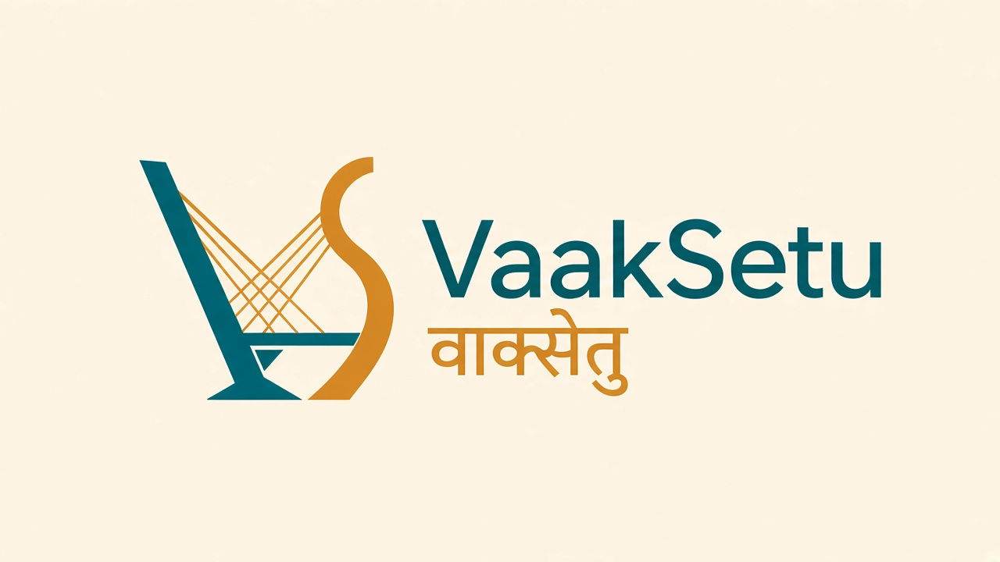
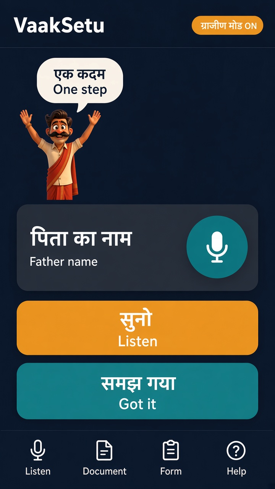

Hear the paper before you sign.
Point a phone at a loan, deed, or form — VaakSetu speaks the risks in your language.


Point a phone at a loan, deed, or form — VaakSetu speaks the risks in your language.
